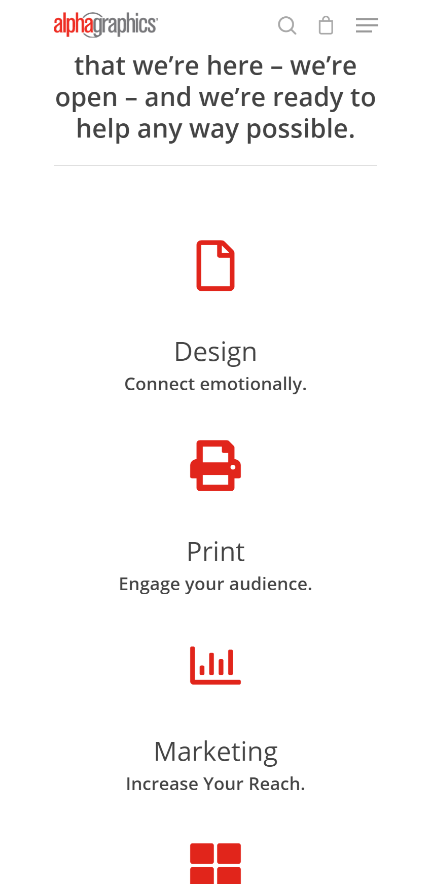
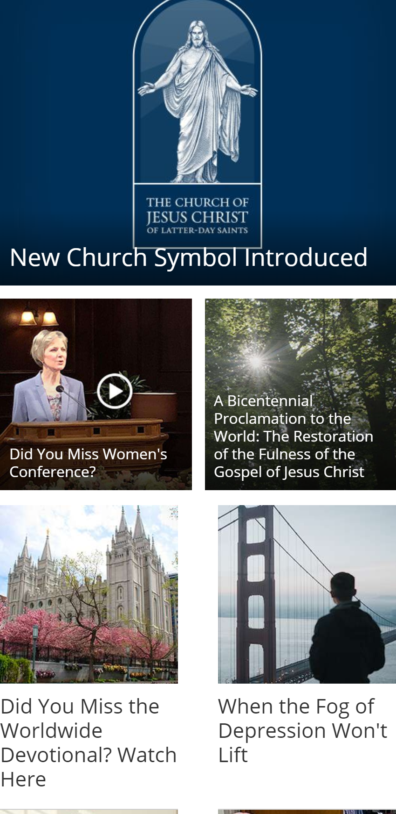
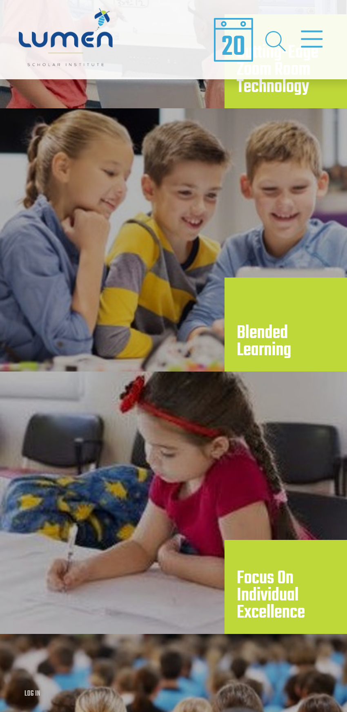

Design Principles
White Space
AlphaGraphics Bountifulagbountiful.com 
This website effectively uses white space to draw your attention to the simple icons and descriptions to better help users find their way.
Alignment
Church of Jesus Christ of Latter-day Saintschurchofjesuschrist.org 
The way the grid is aligned on the Church's website for the mobile view provides an organized look at the articles and news that are important.
Contrast
Lumen Scholarlumenscholar.org 
The contrast of the green with the pictures shown in the screenshot draw the user to the sections of most interest to the user.